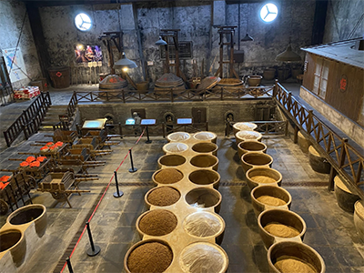

If Zhenjiang’s unique water resources and raw materials come from the gift of nature, then it is the credit of the Hengshun Industry integrating these natural resources to mass-produce Zhenjiang vinegar. Founded in 1840, Hengshun Industry is the earliest producer and inheritor of Zhenjiang vinegar and is currently the largest vinegar manufacturer in China. Since 1910, Hengshun Industry has been awarded the gold medal by the “Nanyang Dynamic Industry Association” and became the licensed producer of Shanghai World Expo in 2010.
Hengshun Industry adopts the traditional “solid-state stratifying fermentation” process, a brewing technique included in the first batch of the Chinese intangible culture heritage protection list. Starting from selecting sticky rice of local specialty, the whole brewing operation takes 180 days, excluding the storage time, through the three processes of winemaking, fermenting, and vinegar drenching.
